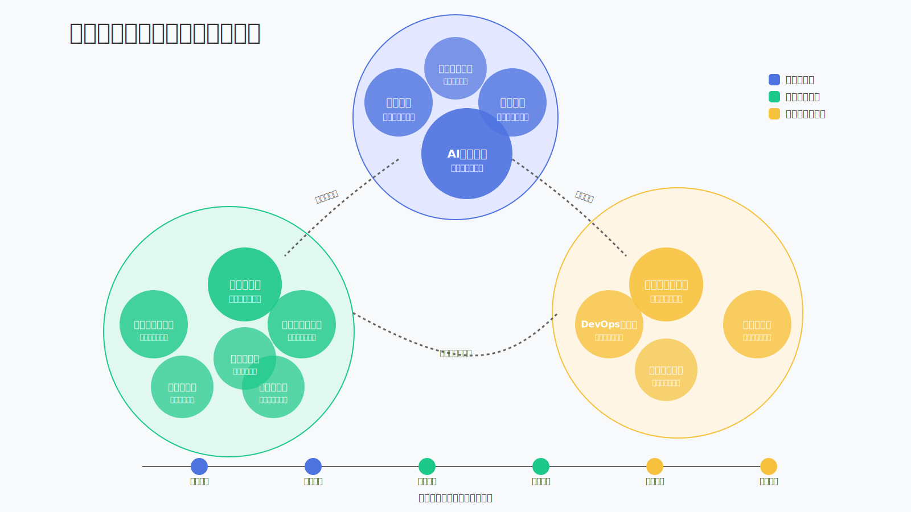

机器学习项目团队都有哪些角色？

管理层角色
1. 产品经理（Product Manager）
背景：负责将机器学习算法从"技术成果"转变为"可落地交付应用的产品"
职责：
- 紧跟行业动态，探讨产品创新
- 提供产品解决方案和功能设计
- 进行竞品调研分析
- 对客户宣讲交流，参与招投标文件编写
- 产品迭代管理，提升用户体验
产出物：PRD产品需求文档、产品白皮书、项目解决方案
2. 项目经理（Project Manager）
背景：在产品开发完成或处于MVP阶段后，负责项目的成功实施和交付
职责：
- 制定项目计划和实施方案
- 协调内外资源，跟进执行进度
- 组织项目评审会议及项目例会
- 控制风险，确保项目按时交付
产出物：项目文档、项目解决方案、项目交付方案
3. AI产品经理
背景：专注于AI产品的规划与决策
职责：
- 深入理解技术可行性
- 确定团队工作重点
- 确保项目与市场需求契合
- 协调各角色协同工作
特点：是团队的关键枢纽，决策直接影响团队方向
技术研发角色
4. 数据科学家（Data Scientist）
背景：跨学科职位，负责数据分析和价值挖掘
职责：
- 参与项目售前咨询
- 制定数字化创新和解决方案
- 挖掘数据价值，进行商业价值分析
- 应用统计建模、机器学习和深度学习方法解决实际问题
- 指导业务建模和模型训练
产出物：数据分析报告、模型
5. 机器学习研究员（ML Researcher）
背景：专注于前瞻性探索与研究
职责：
- 跟踪行业技术趋势，提出创新性想法
- 进行算法落地应用可行性论证
- 设计推理系统架构
- 进行模型训练和算法调优
- 发表学术论文，提供前沿理论支持
产出物：模型、学术论文、分析/评估报告
6. 机器学习工程师（ML Engineer）
背景：负责模型实现和部署
职责：
- 利用机器学习算法解决核心业务需求
- 进行算法选型、工程实现和优化创新
- 负责推理系统部署和接口开发
- 将推理系统与软件产品集成
- 构建机器学习工具和代码库
产出物：模型、推理系统、软件集成
7. 机器学习应用科学家
背景：连接理论与实践的桥梁
职责：
- 深入理解机器学习原理
- 将理论应用到实际场景
- 确保研究成果能在实际应用中产生影响
特点：提供理论与实践的完美结合
8. 数据工程师（Data Engineer）
背景：负责维护数据管道和流程
职责：
- 开发数据存储设计和性能优化
- 进行数据聚合和存储
- 负责数据清洗、挖掘和监控
- 确保ML工作的数据可用性
产出物：数据库/数据仓库、数据处理代码
9. 数据分析师
背景：专注于数据洞察
职责：
- 深入分析收集的大量数据
- 提供系统性能和效果的建议
- 为团队决策提供数据支持
特点：影响团队的决策和优化策略
10. 大数据工程师
背景：处理海量数据的专家
职责：
- 保障数据安全
- 建立高效的数据存储系统
- 确保数据能被高效检索和利用
特点：为AI团队提供坚固可靠的数据基础
开发与交付角色
11. 软件开发工程师（Software Development Engineer）
背景：负责系统架构和软件开发
职责：
- 进行架构设计
- 设计接口（APIs、MQ、JSON等）
- 负责前端/后端开发和测试
- 与DL推理系统集成
产出物：软件产品、集成系统
12. DevOps工程师
背景：负责开发运维一体化
职责：
- 构建DevOps流程
- 搭建基础设施平台
- 选型、部署、维护与监控DevOps工具链
- 建立持续的CI/CD环境
产出物：DevOps文化引导、基础设施平台、产品部署
13. 交付工程师（Delivery Engineer）
背景：负责项目的最终交付和实施
职责：
- 进行项目需求调研
- 负责现场测试和实施
- 完成项目交付和验收
- 提供客户培训和技术支持
产出物：需求调研报告、项目计划、实施方案、项目文档
14. 业务咨询顾问（Business Consultant）
背景：提供业务领域专业知识
职责：
- 沟通业务和市场需求
- 整理行业解决方案
- 配合产品经理完成需求调研
- 设计售前咨询方案
- 提供产品方向建议
产出物：需求调研报告、解决方案
团队协作模式
在实际工作中，机器学习项目团队的角色可能会有所重叠，特别是在小型团队中，一个人可能需要承担多个角色的职责。成功的机器学习项目需要各个角色密切协作，共同构建强大的AI系统。
团队协作的关键在于：
- 明确的职责划分
- 有效的沟通机制
- 统一的工作流程和标准
- 灵活的资源调配
通过各方力量的协同努力，才能在不断变化的技术环境中保持竞争优势，成功实现机器学习项目的落地应用。